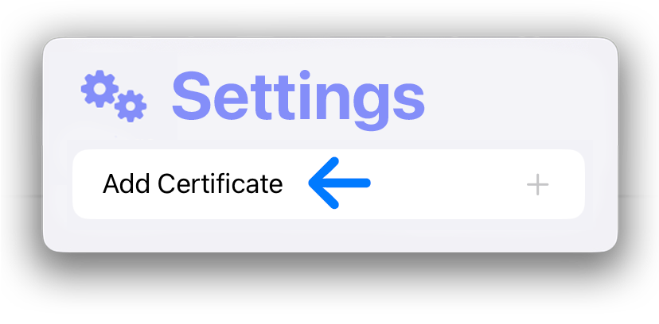
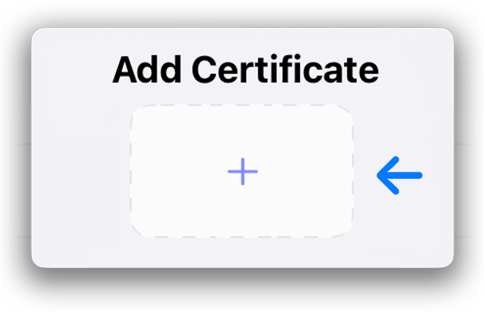
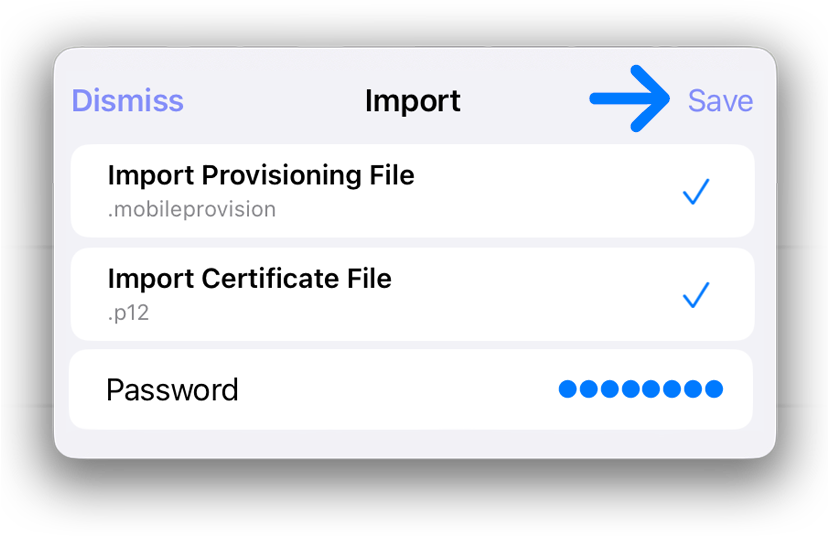

Go to the Settings tab and tap on Add Certificate.
Click on the plus button.
In the pop-up, select the two files from the certificate folder you extracted earlier. You also need to enter the password you noted down earlier. Then click on Save.
